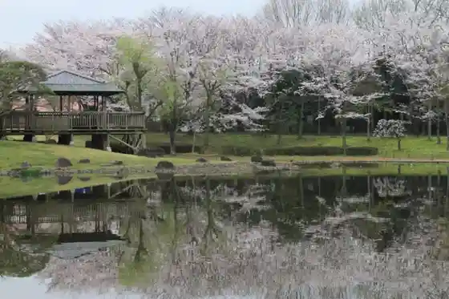
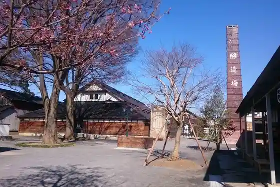
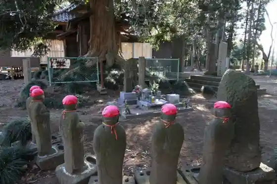
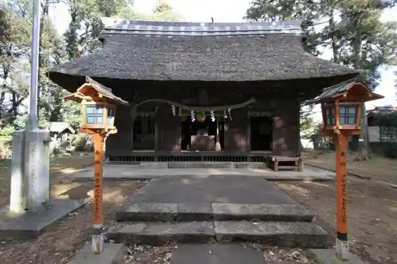

Museum Park Ibarakiken Shizen Museum
Bando, Ibaraki · 0297-38-2000 · Official / source link
Yasaka General Park
Bando, Ibaraki · 0297-20-8666 · Official / source link

Bando Kanko Koryu Center (Shu Midori (Shuroku))
Bando, Ibaraki · 0297-35-0002 · Official / source link

Enmei In
Bando, Ibaraki · 0297-20-8666 · Official / source link

Kokuo Shrine
Bando, Ibaraki · 0297-20-8666 · Official / source link

Sakasai Castle Ruins Park
Bando, Ibaraki · 0297-20-8666 · Official / source link
Nosambutsu Chokubai Tokoro Yahagi no Sato
Bando, Ibaraki · 0297-38-1790 · Official / source link
Shi Tsu Roku Iori
Bando, Ibaraki · 0297-35-0582 · Official / source link
Nosambutsu Chokubai Tokoro Megumi no Sato Sashima
Bando, Ibaraki · 0297-44-0530 · Official / source link
Ishii no Ido
Bando, Ibaraki · 0297-20-8666 · Official / source link
Sushi Nihonryori Ara I
Bando, Ibaraki · 0297-35-0693 · Official / source link
Machinaka Koryu Center Yumepuraza Bando
Bando, Ibaraki · 0297-20-8666 · Official / source link
Kanki Tera no Edohigan Sakura
Bando, Ibaraki · 0297-20-8666 · Official / source link
Naka Village Buruberii Sono
Bando, Ibaraki · 0297-35-7614 · Official / source link